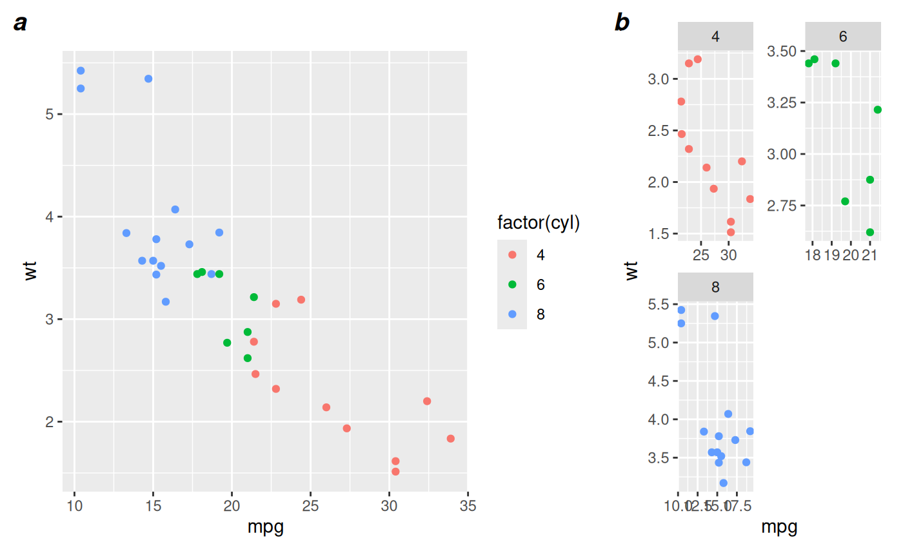

Arrange multiple ggplot, grobified ggplot, or geo_scale objects on a page, aligning the plot panels, axes, and axis titles.
Usage
ggarrange2(
...,
plots = list(...),
layout = NULL,
nrow = NULL,
ncol = NULL,
widths = NULL,
heights = NULL,
byrow = TRUE,
top = NULL,
bottom = NULL,
left = NULL,
right = NULL,
padding = unit(0.5, "line"),
margin = unit(0.5, "line"),
clip = "on",
draw = TRUE,
newpage = TRUE,
debug = FALSE,
labels = NULL,
label.args = list(gp = gpar(font = 4, cex = 1.2))
)Arguments
- ...
ggplot, grobified ggplot (gtable), or geo_scale objects
- plots
list of ggplot, gtable, or geo_scale objects
- layout
a matrix of integers specifying where each plot should go, like
matinlayout;NAor a value less than 0 or greater than the number of plots indicates a blank plot; overrides nrow/ncol/byrow- nrow
number of rows
- ncol
number of columns
- widths
list of requested widths
- heights
list of requested heights
- byrow
logical, fill by rows
- top
optional string, or grob
- bottom
optional string, or grob
- left
optional string, or grob
- right
optional string, or grob
- padding
unit of length one, margin around annotations
- margin
vector of units of length 4: top, right, bottom, left (as in
gtable_add_padding)- clip
argument of gtable
- draw
logical: draw or return a grob
- newpage
logical: draw on a new page
- debug
logical, show layout with thin lines
- labels
character labels used for annotation of subfigures (should be in the same order as
plots)- label.args
label list of parameters for the formatting of labels
Examples
library(ggplot2)
p1 <- ggplot(mtcars, aes(mpg, wt, colour = factor(cyl))) +
geom_point()
p2 <- ggplot(mtcars, aes(mpg, wt, colour = factor(cyl))) +
geom_point() + facet_wrap( ~ cyl, ncol=2, scales = 'free') +
guides(colour='none') +
theme()
ggarrange2(p1, p2, widths = c(2,1), labels = c('a', 'b'))

p3 <- ggplot() +
geom_point(aes(y = runif(1000, 0, 8), x = runif(1000, 0, 1000))) +
scale_x_reverse() +
coord_geo(xlim = c(1000, 0), ylim = c(0,8)) +
theme_classic()
ggarrange2(ggarrange2(p1, p2, widths = c(2,1), draw = FALSE), p3, nrow = 2)